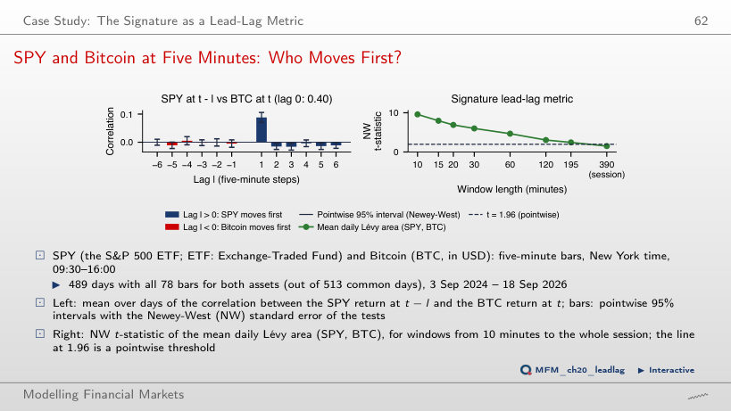

The slide of the lecture is on the left, the same figure on the right, computed in the browser from the same data. The ▶ button moves the parameter step by step.
The VOLARE Database · Results · Ablations and Robustness · Case Study: The Signature as a Lead-Lag Metric
The VOLARE Database
Realised Volatility Across Asset Classes

Answer
It falls, from 458% (five days ending 22 April 2020) to 152% (65 days ending 3 June 2020). A longer averaging window mixes the extreme values with quieter days. The option “unchanged” confuses the smoothed series with the original observations; “rises” confuses a mean with a sum. With the five-day mean, ES reaches 115% in March, JPM 111% and NVDA 118%, while EURUSD and USDJPY stay near 20%. The median volatility per class is 17.1% for stocks, 19.7% for futures and 7.3% for FX.
Results
QLIKE Relative to HAR, Asset by Asset

Answer
Above 1: the mean Sig-L/log-HAR ratio is 1.004, so Sig-L has a slightly higher relative loss in this sample; for Sig-LK, 1.045. When the benchmark changes, the page recomputes the ratio of each asset and then averages; it does not divide the two means. A value of 1 is guaranteed only for the benchmark compared with itself. Relative to HAR, the means are 0.883 for log-HAR, 0.885 for log-HAR-K and 0.886 for Sig-L. These means are not a significance test.
Model Confidence Sets

Answer
It rises or stays the same. The elimination threshold α falls from 0.10 to 0.01, and the page keeps the models with an MCS p-value above the threshold, so it eliminates fewer. For Sig-LK, the shares go from 100%, 94% and 88% to 100%, 100% and 100% at h = 1, 5 and 22; for log-HAR, from 100%, 98% and 98% to 100%. A higher confidence level does not mean a more restrictive selection. Membership of the MCS does not establish equal accuracy: at 90%, the four log models are rarely separated, while HAR, HARQ and SHAR are excluded for a fifth to a third of the assets.
Inside the COVID-19 Crash: JPM, Next Day

Answer
None. At this origin, the next-day target is about 139%, while the forecasts are 59% (HAR), 49% (log-HAR) and 60% (Sig-LK): all strongly underestimate the jump. The somewhat faster later reaction of Sig-LK in mid-March and the later overshooting of the target by HAR do not show that either anticipated this jump. The raw HAR forecast turns negative in late March; the chart shows the value after the positivity rule (the mean target of the training window), and the 7 replaced origins are marked with ×.
Stress Periods vs Normal Times (H4)

Answer
No. The value 0.73 shows an advantage over HAR; with the same benchmark, however, log-HAR has 0.70, so the results show no additional advantage of Sig-LK. On the other days, the ratios are 0.94 (log-HAR) and 0.97 (Sig-LK). At h = 22, in the same crash, Sig-LK has 6.35 times and Sig-L 8.30 times the HAR loss. The results give no descriptive support to H4; they are not a formal test of the difference between periods.
Kernel Weights at the Origin 16 March 2020

Answer
It falls, from about 975 to 36 of 1,000. The weights are proportional to exp(−c δ / median of δ), where δ is the distance between windows: a larger c concentrates them on the small distances. The number of observations stays 1,000; the effective size falls. With c = 0.5, the average weight stays between 0.61 and 1.43 times 1/n; with c = 8, between 0.10 and 157 times 1/n. The highest weights go to the last days before the origin, whose 22-point windows overlap the current window. Translation invariance does not mean equal distances between windows.
Ablations and Robustness
The 2 × 2 Ablation

Answer
No: the mean falls from 1.045 to 1.011, so leaving CL out does not reverse the descriptive ranking. CL has a ratio of 2.71, but the effect of leaving it out also depends on the other 49 ratios. The weights alone (log-HAR-K) give 1.002, 1.002 and 1.004 relative to log-HAR at h = 1, 5 and 22; Sig-L gives 1.004, 1.285 and 2.238; Sig-LK, 1.045, 1.280 and 1.929. Sig-L evaluates the procedure with signatures and LASSO selection, so its difference from log-HAR cannot be attributed to the features alone.
Case Study: The Signature as a Lead-Lag Metric
SPY and Bitcoin at Five Minutes: Who Moves First?

Answer
120 minutes: NW t ≈ 3.05 and Holm-adjusted p ≈ 0.032. At 195 minutes, NW t ≈ 2.45 passes the pointwise 1.96 threshold, but the adjusted p is 0.157. The 10-minute option confuses the window with the strongest signal (t = 9.6, the area positive on 70% of the days) with the longest significant window; 195 minutes uses the pointwise threshold instead of the correction. Over the whole session, t = 1.51. The correlation between SPY at t − 1 and BTC at t is 0.088 (NW t = 9.8), and in the reverse direction −0.005. The 20 tests (12 lags and 8 windows) are exploratory, and the result indicates a lead-lag association, not causality. The effect weakens in 2026: the lag +1 correlation falls to 0.04.
Realised variance from the VOLARE database (Cipollini et al., 2026): 40 US stocks (2015–2026), 5 futures and 5 currency pairs (2009–2026), five-minute returns. VOLARE data are licensed for research use and are not redistributed; only summaries appear here: per-asset mean losses and MCS p-values, kernel weights and distances, five-day means of the volatility of the six assets on the slide (one value per week), and the JPM forecasts of February–May 2020. The lead-lag case study uses the five-minute bars of SPY and Bitcoin (EODHD, data/market/intraday): the cross-correlations and mean Lévy areas of each day.